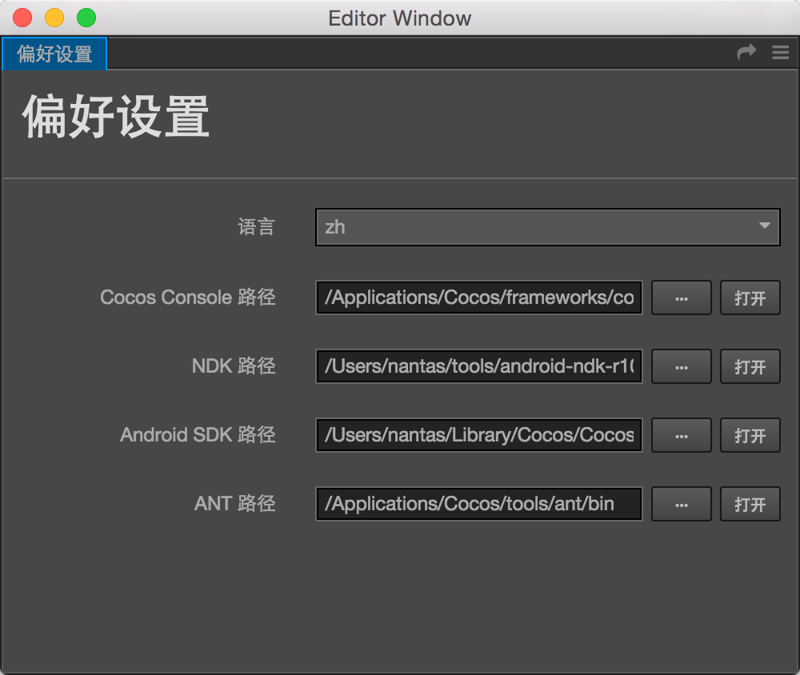

安装配置 Cocos Framework
除了内置的 Web 版游戏发布功能外，Cocos Creator 使用基于 cocos2d-x 引擎的 JSB 技术实现跨平台发布原生应用和 Cocos Play 手机页游。在使用 Cocos Creator 打包发布到原生平台之前，我们需要先配置好 Cocos Framework 和相关的开发环境。
下载和安装 Cocos Framework
Cocos Framework 是 cocos2d-x 引擎的预编译版本，相比完整版引擎有体积小、免编译、易安装的优点。目前 cocos2d-x 引擎最新版本是 v3.9，下面是 v3.9 版本的 Cocos Framework 下载链接：
下载之后运行安装包，根据提示安装就可以了。
Windows 版 Cocos Framework 安装时可以选择目标路径，Mac 版会默认安装在 /Applications/Cocos/frameworks 下。请确认您的 Cocos Framework 安装路径，我们之后需要在 Cocos Creator 中进行配置。
下载发布 Android 平台所需的 SDK 和 NDK
如果您没有发布到 Android 平台的计划，或您的操作系统上已经有完整的 Android 开发环境，可以跳过这个部分。
从以下链接下载和操作系统一致的 Android SDK 和 NDK：
下载之后解压到任意位置，我们之后需要设置 Android SDK 和 NDK 的路径，请记住以上文件的解压位置。
安装 C++ 编译环境
Cocos Framework 中的编译工具 Cocos Console 需要以下运行环境：
- Python 2.7.5+，下载页，注意不要下载 Python 3.x 版本。
- Windows 下需要安装 Visual Studio 2013 或 2015 社区版，下载页
- Mac 下需要安装 Xcode 和命令行工具，下载页
配置原生发布环境路径
接下来让我们回到 Cocos Creator 中配置构建发布原生平台的环境路径。在主菜单中选择 文件/偏好设置，打开偏好设置窗口：

我们在这里需要配置以下四个路径：
- Cocos Console，一般位于 Cocos Framework 下面的
/tools/cocos2d-console/bin目录，选定的路径中应该包括一个名叫cocos的可执行文件。 - NDK，选择刚才下载并解压后的 NDK 路径，不需要编译 Android 平台的话这里可以跳过
- Android SDK，选择刚才下载并解压后的 Android SDK 路径，不需要编译 Android 平台的话这里可以跳过
- ANT，安装 Cocos Framework 后会放在和
frameworks平级的tools目录中，选定的路径中应该包括一个名叫ant的可执行文件。
配置完成后关闭窗口就可以了。
现在您已经完成了全部原生开发环境的配置，接下来请继续前往 打包发布原生平台 说明文档。